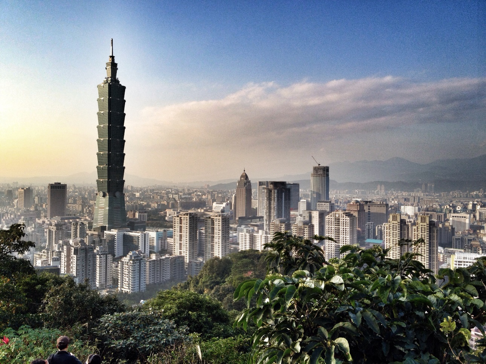

Taipei 101 (台北101)

Taipei 101 is a supertall skyscraped, completed in 2004. It was the world's tallest skyscraper until the 2008 completion of the Shanghai World Financial Center in Shanghai, China. Its elevators can travel at speeds up to 37.7mph, and can transport passengers from the 5th to 89th floor in 37 seconds.
Dalongdong Bao'an Temple (大龍峒保安宮)

Dalongdong Bao'an Temple is a Taiwanese folk religion temple built in the Datong District in Taipei. The temple is over 200 years old! In 2003, the temple was inducted into the UNESCO Asia-Pacific Heritage Awards for Culture Heritage Conservation.
Elephant Mountain (象山)
Elephant Mountain is a mountain in that overlooks Taipei. It is named for its "elephant-like" shape, and contains the tourist attraction the Six Giant Rocks. It is 183m high and has a hiking trail about 1.5km long.
Fo Guang Shan Buddha Museum (佛光山佛陀紀念館)

The Fo Guang Shan Buddha Museum is a Buddhist museum located in Kaohsiung. It has been open to the public since 2011, and is frequently featured in the top ten landmarks of Taiwan. It has a big ole Buddha statue too, look at that big boi.